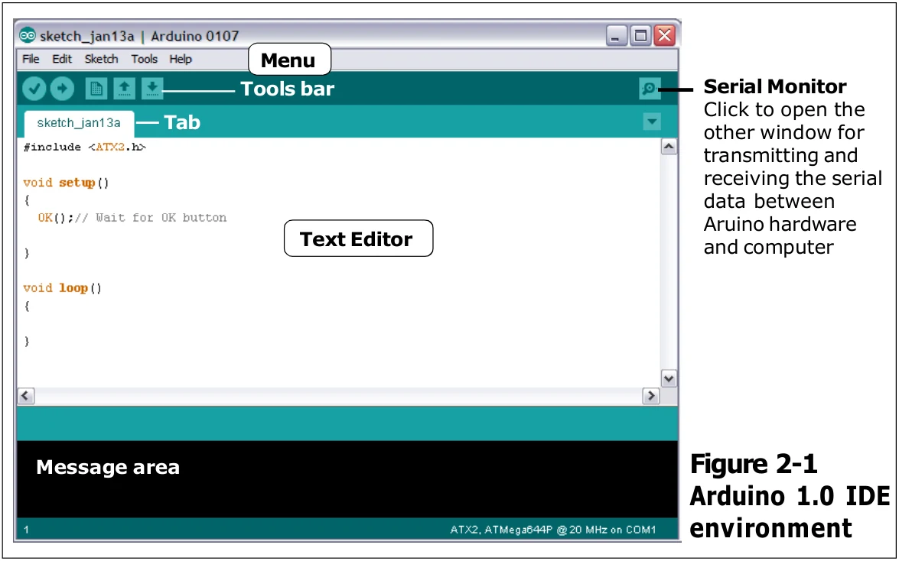
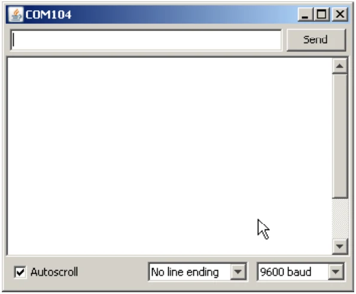

2.4 Arduino environment
After starting Arduino IDE 1.0.7, the main window will appear as shown in the figure 2-1. The Arduino includes the environments as follows.

- Menu : Select the operation command
- Toolbar : Includes all most command button
- Tabs : Allows you to manage sketches with more than one file (each of which appears in its own tab).
- Text editor : Text editor area for creating the sketch.
- Message area : Shows the program operation status such as compiling result.
- Text area : The space demonstrates compiling information and Serial data Terminal window if enable.
- Serial Monitor This button is on the top right corner. Click this button to open the serial communications and display information. Requires the Arduino hardware must connect with the COM port always.

Serial Monitor is a important for displaying the serial data on the computer. Arduino has this command ; Serial.print to display data. For sending data from computer to Arduino is very easy. Only type the data on the text box and click on the Send button at the top right corner of Serial monitor window. For using Mcintosh computer or Linux computer; the Arduinoi hardware will need be reset when the Serial monitor is opened every time.
In this section
Original manual, pages 16–17